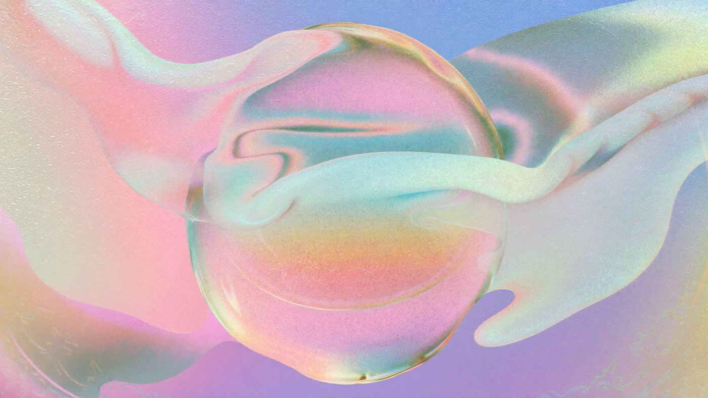

Error 404
That page doesn't exist.
The link might be old, or the address was mistyped. Here's where the site actually lives.

Error 404
The link might be old, or the address was mistyped. Here's where the site actually lives.